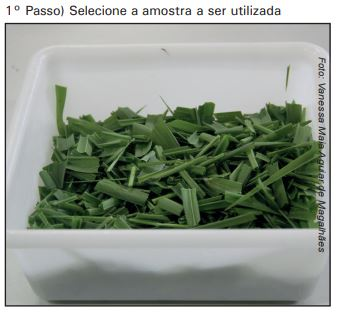
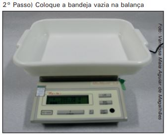
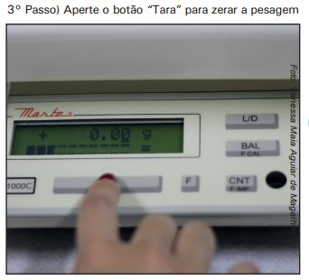
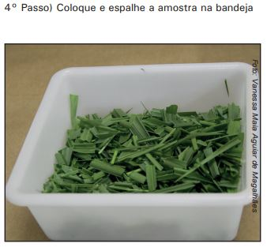
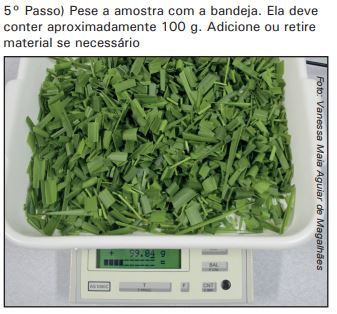
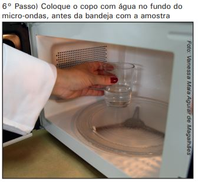
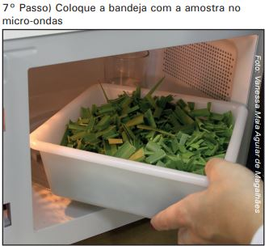

Calcular a Quantidade de Matéria Verde
Materiais Necessários


Método
      8° Passo) Coloque 1min na potência máxima
9° Passo) Pese a bandeja e anote
10° Passo) Misture a amostra com cuidado para não cair nenhum pedaço da forragem
11° Passo) Repita todos os passos até que o peso da amostra seja o mesmo da pesagem anterior
Após a última pesagem, como a amostra tinha peso de 100,00 gramas, o teor de matéria seca será o valor da leitura no visor da balança.